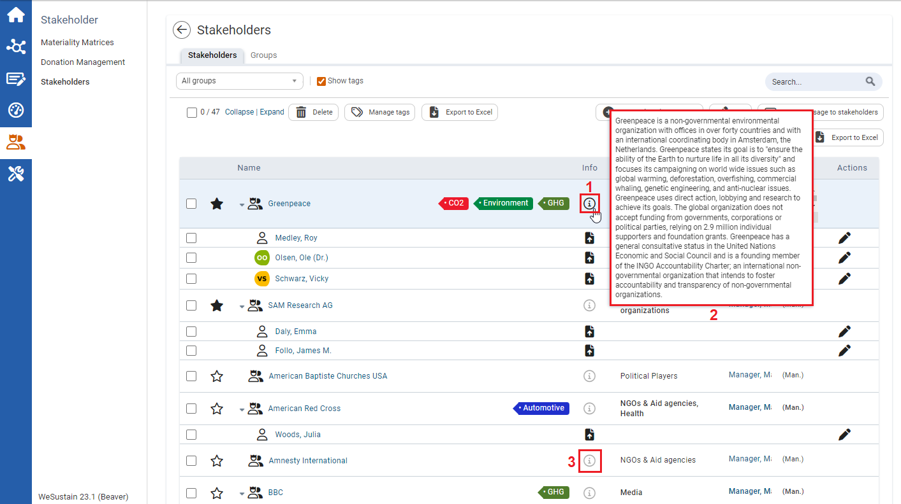

You can receive further information via mouse-over that will help you in your daily work. By positioning the mouse over a symbol without clicking, you can view the mouse-over information.

| 1 | For fields and symbols without a label (e.g. all icons), you can view a symbol explanation as mouse-over information by positioning the mouse pointer over the symbol without clicking. |
| 2 | The figure shows the mouse-over information of the stakeholder ‘Greenpeace’. |
| 3 | The Info-icon is a special icon because here you can insert yourself certain contents like a description or tags. The grey icon indicates that there is no information stored. The black icon indicates that there is further information stored, which you can see via mouse-over or by clicking on the Info-icon. |